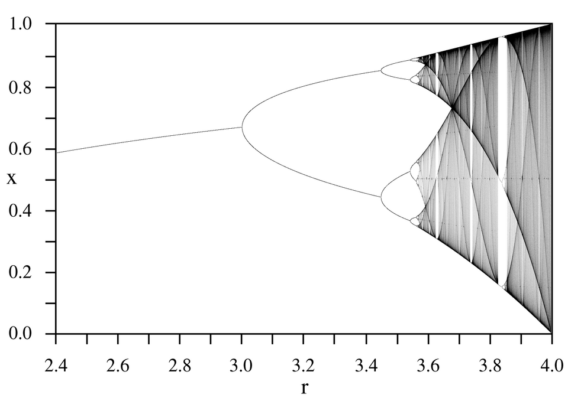

Fractal geometry is the study of sets whose structure persists under magnification and whose size is not adequately described by length, area or volume. The elementary picture — the Koch curve has infinite length and zero area, the Sierpinski triangle has zero area and infinite perimeter, and a "dimension" such as log 4 / log 3 measures something in between — is the starting point of this course, not its goal. Here we make that picture rigorous and then push it into the territory where the subject meets analysis, probability and dynamical systems.
The mathematical backbone is threefold. First, a fractal is usually a compact set, and the space of compact sets carries a natural complete metric, the Hausdorff metric; in that space, a finite family of contractions defines a contraction, and Banach's fixed point theorem produces the self-similar sets as attractors. Second, the notion of dimension splits into several inequivalent definitions — similarity dimension, box-counting dimension and Hausdorff dimension, together with packing and affinity dimensions — and much of the theory consists of deciding when they agree and computing them when they do not. Third, fractals arise not only by design but by dynamics: Julia sets and the Mandelbrot set from iterating z ↦ z² + c, strange attractors and period-doubling cascades from the logistic map, and random fractals from Brownian motion.
The prerequisites are a first course in real analysis (metric spaces, compactness, uniform convergence), a working knowledge of Lebesgue measure, and elementary complex analysis. Probability enters only in the lesson on Brownian motion, where standard facts are quoted with references to their proofs. Throughout, log denotes the natural logarithm unless a base is indicated, |U| denotes the diameter sup{|x − y| : x, y ∈ U} of a set U ⊂ ℝⁿ, and B(x, r) is the closed ball of centre x and radius r.
The historical arc is worth keeping in view. Cantor's ternary set (1883), von Koch's curve (1904) and Sierpinski's gasket (1915) were constructed as counterexamples in analysis and topology. Carathéodory (1914) and Hausdorff (1918) supplied the measure theory that assigns fractional dimensions; Besicovitch and his school developed it from the 1920s to the 1950s. Fatou and Julia (1918–1920) founded complex dynamics without ever seeing a computer picture of a Julia set. Mandelbrot's books of 1975–1982 unified these strands, named them, and showed their reach into the sciences; Hutchinson (1981) and Barnsley (1988) gave the iterated function system formalism; Douady and Hubbard (1982–1985) proved the first deep theorems on the Mandelbrot set; Feigenbaum (1978) discovered universality in period doubling. The subject remains an active research area, with major problems such as the local connectivity of the Mandelbrot set still open.
In this course, you will:
- 1.Work in the complete metric space of compact sets equipped with the Hausdorff metric
- 2.Prove the contraction mapping theorem and use it to construct attractors of iterated function systems
- 3.Code self-similar sets by infinite words and analyse the chaos game
- 4.Derive the similarity dimension from the Moran equation and understand the open set condition
- 5.Define and compute box-counting dimensions, and see where they fail
- 6.Build Hausdorff measures by the Carathéodory construction and define Hausdorff dimension
- 7.Prove that the Cantor set has Hausdorff dimension log 2 / log 3, using the mass distribution principle
- 8.Prove the Moran–Hutchinson theorem and meet self-affine sets, where dimensions genuinely differ
- 9.Study Julia sets: escape radius, complete invariance and the Fatou–Julia dichotomy
- 10.Study the Mandelbrot set as the connectedness locus, with its cardioid, bulbs and open problems
- 11.Analyse the logistic map, period doubling and the Feigenbaum constants
- 12.Compute the dimensions of Brownian paths and graphs, and of Weierstrass-type functions
- 13.Meet multifractal measures, the τ-spectrum and the Legendre transform
Figures


Contents
Metric Spaces and the Hausdorff Metric Lesson 2
Contractions and Iterated Function Systems Lesson 3
Coding, Addresses and the Chaos Game Lesson 4
Similarity Dimension, the Moran Equation and the Open Set Condition Lesson 5
Box-Counting Dimension Lesson 6
Hausdorff Measure and Hausdorff Dimension Lesson 7
Computing Hausdorff Dimension — The Cantor Set and the Mass Distribution Principle Lesson 8
The Moran–Hutchinson Theorem, Overlaps and Self-Affine Sets Lesson 9
Julia Sets of Quadratic Polynomials Lesson 10
The Mandelbrot Set Lesson 11
The Logistic Map, Period Doubling and Feigenbaum Universality Lesson 12
Brownian Motion and Random Fractals Lesson 13
Multifractal Measures Problem Set
60 problems Assessment
Randomly generated questions
Image sources
- Figure 1 · Hausdorff 1913-1921. By Unknown photographer. Public domain. From Wikimedia Commons: https://commons.wikimedia.org/wiki/File:Hausdorff_1913-1921.jpg
- Figure 2 · LogisticMap BifurcationDiagram. By PAR. Public domain. From Wikimedia Commons: https://commons.wikimedia.org/wiki/File:LogisticMap_BifurcationDiagram.png